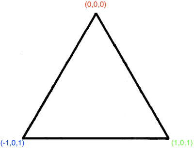
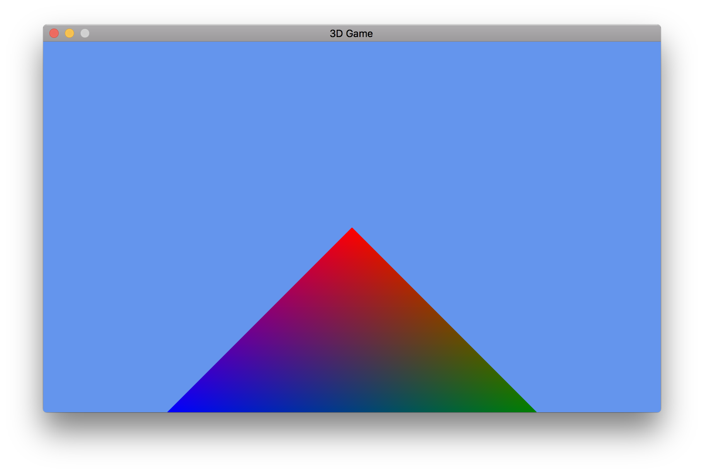

Bei 3D Spielen bewegen wir uns in einem Koordinaten System mit 3-Achsen: X, Y und Z. So gesehen haben 2D Spiele auf der Z Komponente immer den Wert 0. MonoGame bzw. Xna stellt uns Klassen zur Verfügung, um mit 2D oder 3D Koordinaten zu arbeiten: Vector2 und Vector3.
Sobald man sich mit der Entwicklung von 3D Spielen beschäftigt, kommt man nicht mehr drum herum sich ein wenig Grundlagen der Linearen Algebra anzueignen. Die komplexeren Berechnungen mit Matrizen hat uns bereits MonoGame durch das XNA Framework abgenommen.
Ich schreibe später noch einen Artikel, in welchem ich bisher verwendete Lineare Algebra Techniken sammeln und im Detail erklären werde.
Für diesen Artikel jedoch genügt es zu wissen, dass man Vektoren genauso wie Punkte in einem Koordinatensystem (wie mans aus der Schule kennt) betrachten kann. Da mich zu viele Informationen in der 3D Programmierung damals überforderten, werde ich dich langsam in die Welt hineinführen. Das heißt, Details werden erst wichtig, sobald diese auch wirklich notwendig sind.
Da XNA ein Right-handed-system verwendet, haben wir folgende Orientierung von der Ego Perspektive:
- Vorwärts ist -Z
- Rückwärts ist +Z
- Rechts ist +X
- Links ist -X
- Hoch ist +Y
- Runter ist -Y
Vertex / Vertices und Faces
Ein 3D Objekt besteht aus einer Ansammlung von Knotenpunkten (Singular: Vertex, Plural: Vertices), die durch Kanten verbunden sind. Die Knotenpunkte sind meistens so miteinander verbunden, dass ein s.g. Face aus einem Dreieck besteht.
Mit Vertices können wir “Primitiven” erzeugen, wie zum Beispiel Dreiecke oder Linien.
In der Forschung oder auch bei CAD ist es manchmal nützlich andere Primitiven zu verwenden, wie zum Beispiel Quads (Rechtecke). Da Spiele aber in Echtzeit arbeiten müssen und Grafikkarten darauf ausgelegt sind effizient mit Dreiecken zu arbeiten, verwendet man hier eben Dreiecke. Außerdem können andere Formen, wie zum Beispiel ein Rechteck, aus Dreiecken konstruiert werden.
Vertices werden Informationen gegeben, die dann von der Grafikkarte ausgeführt werden. Zum Beispiel kann ein Farbwert und ein Vektor mitgegeben werden, damit die Grafikkarte weiß, wo der Knotenpunkt liegt und welche Farbe dieser hat.
Hello World in GFX
Das Erstellen eines Dreiecks in Graphic Frameworks ist das analoge Verfahren zu dem “Hello World” in der Anwendungsentwicklung.
Wer hätte es gedacht: für ein Dreieck benötigen wir 3 Vertices. Wir stellen uns folgende Situation vor: Die Kamera befindet sich direkt auf der Y-Achse und schaut auf den Ursprung runter. Dort liegt ein Dreieck mit den Punkten R(0,0,0), G(1,0,1) und B(-1,0,1), hinterlegt mit den Farben Rot, Grün und Blau.

Um etwas aus der 3D Welt darstellen zu können, benötigen wir Shader. Für Shader wird es ein eigenes Kapitel geben. An dieser Stelle genügt uns lediglich zu wissen, dass Shader Programme sind, die von der Grafikkarte ausgeführt werden. Dort ist dann beschrieben, wie etwas dargestellt wird. MonoGame liefert uns eine Klasse “BasicEffect”, die eine einfache Standarddarstellung ermöglicht. Diesen Shader müssen wir aber Bescheid geben, wo sich unsere Kamera befindet, worauf sie schaut, wie unsere Perspektive ist und wo sich unser Objekt befindet.
Die Erklärung zum Code folgt unter dem LoadContent()-Snippet:
private VertexPositionColor[] vertices;
private BasicEffect effect;
protected override void LoadContent()
{
spriteBatch = new SpriteBatch(GraphicsDevice);
vertices = new[]
{
new VertexPositionColor(new Vector3(0,0,0), Color.Red), // R
new VertexPositionColor(new Vector3(1,0,1), Color.Green), // G
new VertexPositionColor(new Vector3(-1,0,1), Color.Blue), // B
};
effect = new BasicEffect(GraphicsDevice);
effect.VertexColorEnabled = true;
effect.Projection = Matrix.CreatePerspective((float) GraphicsDevice.PresentationParameters.BackBufferWidth /
GraphicsDevice.PresentationParameters.BackBufferHeight, 1, 1, 10);
var cameraPosition = new Vector3(0,2,0);
effect.View = Matrix.CreateLookAt(cameraPosition, Vector3.Zero, Vector3.Forward);
}
Wir erstellen ein Array mit den drei Vertices R, G und B. VertexPositionColor ist eine vorgefertige Struktur, für die als Information für den Shader deklariert ist, dass Sie eine Position und Farbe hat. Im Grunde kennt BasicEffect diese Deklaration und weiß, was zu tun ist. Die Details zu solchen Deklarationen werden erst im Shader Kapitel wichtig.
Wie schon oben erwähnt, benötigt unser Shader (BasicEffect) Informationen zur Szene: VertexColorEnabled aktiviert den Support für die Farben bei den Vertices. Dieser ist standardmäßig auf false. Ohne Aktivierung bekommen wir ein weißes Dreieck.
Projektionsmatrix
Die Projektionsmatrix übersetzt die 3D Szene in das 2D Bild, welches auf dem Bildschirm erscheint. Details darüber sind ein eigenes Kapitel wert. Zum Glück liefert MonoGame uns die Funktion
Matrix.CreatePerspective(float fieldOfView, float aspectRatio, float nearPlaneDistance, float farPlaneDistance);
,der wir Werte übergeben können und eine Projektionsmatrix erhalten. Die Werte können, wie im LoadContent()-Snippet zu sehen, übernommen werden.
Der Shader muss auch wissen, aus wessen Blickwinkel wir die Szene betrachten. Dabei hilft uns die View Matrix. Aber vorher ein Exkurs zum lokalen und globalen Koordinatensystem:
Lokales- und globales Koordinatensystem
Stell dir das Sonnensystem vor. Wenn wir die Sonne als Zentrum sehen, dann hat die Sonne den Ursprung in (0,0,0) und alles andere hat dann Koordiatenpunkte relativ zur Sonne. Wenn wir aber nun deine Position auf der Erde berechnen wollen, dann können wir, um es zu vereinfachen, die Erde als Ursprung definieren. Die Erde hat somit ein Koordinatensystem. Wenn man nun deine Position im Sonnensystem bestimmen möchte, dann muss deine Position aus dem Blickwinkel der Sonne betrachtet werden und das geht mit der Viewmatrix der Sonne. Betrachten wir dieses Beispiel, so würde das Koordinatensystem der Sonne “global” und das der Erde “lokal” genannt werden. In der Spieleentwicklung hat jedes Objekt in der Szene ein lokales Koordinatensystem und wird dann in die Weltkoordinaten der Szene umgerechnet.
View-Matrix
Die Viewmatrix einer Kamera rechnet wiederrum die Weltkoordinaten in lokale Koordinaten der gewünschten Kamera um. Wenn wir nun dem Shader diese Matrix geben, dann arbeitet er aus der Sicht der gewünschten Kamera. Auch hierfür bietet uns MonoGame eine bequeme Funktion, damit wir die Matrix nicht selbst basteln müssen. Es werden lediglich die Kamera Position, der Punkt, den die Kamera fixiert, und der Up-Vektor der Kamera angegeben. Den Up-Vektor kann man sich wie einen Metallarm vorstellen, der die Kamera an der Oberseite festhält und dadurch bestimmt, wie die Kamera gedreht ist.
Matrix.CreateLookAt(Vector3 cameraPosition, Vector3 cameraTarget, Vector3 cameraUpVector);
Rendering des Dreiecks
Sind die Vertices und der Shader vorbereitet, kann gerendert werden!
protected override void Draw(GameTime gameTime)
{
GraphicsDevice.Clear(Color.CornflowerBlue);
foreach (var p in effect.CurrentTechnique.Passes)
{
p.Apply();
GraphicsDevice.DrawUserPrimitives<VertexPositionColor>(PrimitiveType.TriangleList, vertices, 0, 1);
}
base.Draw(gameTime);
}
Die Details zu “Passes” werden im Shader Artikel behandelt. Viel wichtiger ist gerade die Funktion “DrawUserPrimitives”.
MonoGame bietet uns an, Dreiecke oder Linien als Primitiven zu verwenden. Primitiven sind die einfachste Form eines Objekts. Wir teilten in der Funktion der Grafikkarte mit, welche Liste an Vertices sie abarbeiten muss und in welcher Beziehung die Vertices zueinander stehen. Durch “TriangleList” haben wir gesagt, dass die Liste Dreiecke abbilden soll. Außerdem soll sie beim Arrayindex 0 starten und nur 1 Dreieck in der Liste finden.
Fertig ist unser erstes Dreieck!
Frage an dich: was benötigst du, um ein Rechteck zu machen, welches das gesamte Bild verdeckt? Spiel ein bisschen herum und finde es heraus!

Der entstandene Code kann hier heruntergeladen werden.